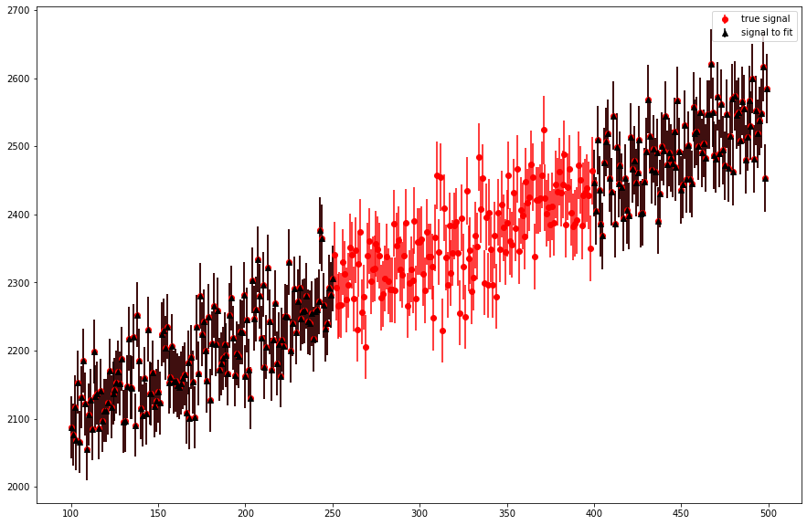
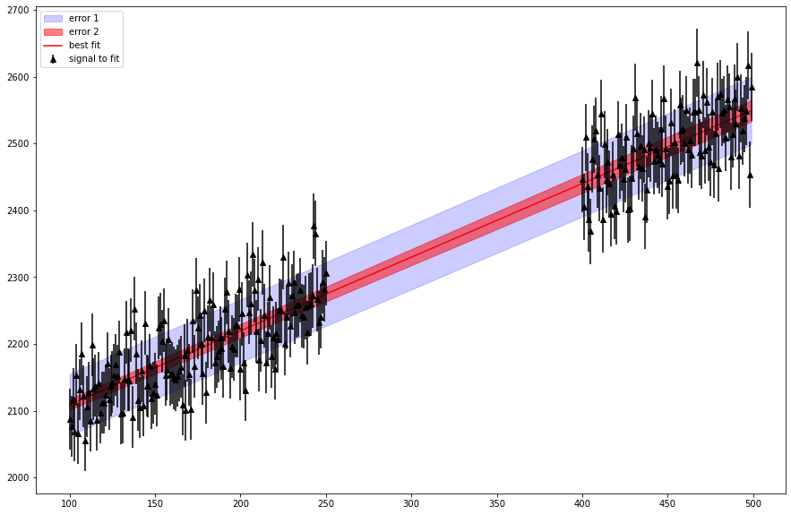

Test_Jupyter
Let’s take light curve senerio for example. The question is rised that whether the error is: - the square-root of best fit count (poisson signal)? - the error determined by error of parameters to fit? - the combination of two cases?
create a fake signal
[1]:
import numpy as np
import matplotlib.pyplot as plt
[2]:
## generate a true signal
time = np.arange(100, 500, 1)
true_a = 1.1
true_bkg = 2000
true_signal = true_a * time + true_bkg
plt.figure(figsize=(15, 10))
# plt.errorbar(time, true_signal, fmt='.')
## add stochastic noise of poisson
obs_signal = true_a * time + np.random.poisson(lam=true_bkg, size=time.size)
plt.errorbar(time, obs_signal, yerr=np.sqrt(obs_signal), fmt='o', color='red',
label='true signal')
fit_index = (time<=250)|(time>=400)
time_to_fit = time[fit_index]
signal_to_fit = obs_signal[fit_index]
plt.errorbar(time_to_fit, signal_to_fit, yerr=np.sqrt(signal_to_fit), fmt='^', color='black',
label='signal to fit')
plt.legend()
[2]:
<matplotlib.legend.Legend at 0x7fd73ae50990>

[3]:
## perform fitting on the black data
from scipy.optimize import curve_fit
def fit_fun(x, b, c):
return b*x + c
popt, pcov = curve_fit(fit_fun, time_to_fit, signal_to_fit)
print("parameters: ", popt)
print("Covariance: ", pcov)
print("Parameters errors: ", np.sqrt(np.diag(pcov)))
## Get error of sqrt of best fit value
error_sqrt_best_fit = np.sqrt(fit_fun(time, *popt))
plt.figure(figsize=(15, 10))
plt.fill_between(time, fit_fun(time, *popt)-error_sqrt_best_fit, fit_fun(time, *popt)+error_sqrt_best_fit, alpha=0.2, color='blue',
label='error 1')
## Calculate error from parameter error
popt_up = popt + np.sqrt(np.diag(pcov))
popt_dw = popt - np.sqrt(np.diag(pcov))
print("popt up: ", popt_up)
print("popt dw: ", popt_dw)
signal_up = fit_fun(time, *popt_up)
signal_dw = fit_fun(time, *popt_dw)
plt.fill_between(time, signal_up, signal_dw, alpha=0.5, color='red',
label='error 2')
## plot data
plt.plot(time, fit_fun(time, *popt), color='red', label='best fit')
plt.errorbar(time_to_fit, signal_to_fit, yerr=np.sqrt(signal_to_fit), fmt='^', color='black',
label='signal to fit')
plt.legend()
parameters: [1.10166630e+00 1.99925923e+03]
Covariance: [[ 3.87278328e-04 -1.10127453e-01]
[-1.10127453e-01 3.88815484e+01]]
Parameters errors: [0.01967939 6.23550707]
popt up: [1.12134569e+00 2.00549474e+03]
popt dw: [1.08198691e+00 1.99302373e+03]
[3]:
<matplotlib.legend.Legend at 0x7fd73b921890>

Calculate the Total Counts and the error in different senerio
[4]:
## True case
true_total_counts = np.sum(true_signal)
true_total_errors = np.sqrt(true_total_counts)
print(true_total_counts, '+-', true_total_errors)
## Error of best fit case
case1_total_counts = np.sum( fit_fun(time, *popt) )
case1_total_errors = np.sqrt(np.sum( error_sqrt_best_fit ** 2))
print(case1_total_counts, '+-', case1_total_errors)
## Error from fitting parameters
case2_total_counts = np.sum( fit_fun(time, *popt) )
case2_total_errors = np.sqrt(np.sum( fit_fun(time, *popt_up) - fit_fun(time, *popt) ))
print(case2_total_counts, '+-', case2_total_errors)
931780.0 +- 965.287521933232
931683.3164910967 +- 965.2374404731183
931683.3164910967 +- 69.65481717607138